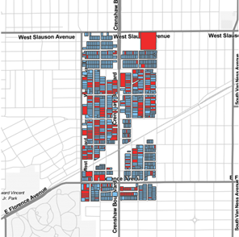
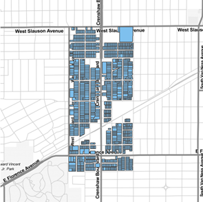
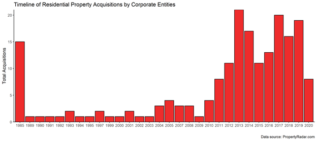

Below are a set of case studies illustrating the web of relationships between capitalist crisis, real estate development, police surveillance, and enforcement of both property and criminal law. When we uncovered these anecdotes, it became obvious that real estate developers had a very cozy relationship with law enforcement. We started asking: How do we expose these relationships? How do we organize against them?
Much like today’s use of data-driven policing, prosecutions, and property development to maintain and continue that conquest, “the wars between European settlers and indigenous
nations in America indicate that colonial conflict was driven by economic incentives, and was racially structured and entangled with civil laws,” and these developments are what “established property relations in the land.” Today those relations – inscribed into American laws and established in legal powers granted to police, prosecutors, and landowners by colonialists centuries ago – continue to shape management, control, and theft of land. The legal system and policing have always together been instrumental to conquest, indeed with much of early US law written to help Europeans manage their conquest of land and ownership of people.
Capitalism, law, and conquest continue to act in combination today. After the 2008 financial crisis and recession that followed, Los Angeles became the site of aggressive land grabs by corporate landlords acquiring distressed residential properties. Many of these predatory entities were organized as Limited Liability Corporations (LLC), which are state-created institutions that free wealthy investors from legal obligations and exposure that most other people face. Wealthy investors used LLCs to exploit the foreclosure crisis in South Central Los Angeles and other historically working-class and historically looted Black and brown communities. The UCLA Luskin Institute on Inequality and Democracy’s Who Profits from Crisis report examines how the Great Recession set the stage for mass housing grabs by powerful corporate actors. Likewise, a recent report from Strategic Actions for a Just Economy (SAJE) reveals the process of “financialization” where small class of investors and corporations come to control a large part of the housing market through the financial system. Corporate ownership, also exposed in this report and other scholarly work, is also associated with higher rates of eviction and foreclosure and poor habitability conditions.
An examination of residential property ownership (specifically, parcels registered as ‘Residential’ for use type with the county Assessor’s Office) in one of the Operation LASER “predictive” policing program’s LASER zones along the Crenshaw Corridor, which stretches from Slauson Avenue to just south of Florence Avenue, illustrates a corporate takeover and the antagonistic transformation of the neighborhood. The region, displayed in Map 1, comprises 1,061 residential parcels amounting to over 4,550 housing units.
 
Today, a total of 194 parcels are owned by corporate entities which translate to over 2,135 units—accounting for nearly half of all housing in the neighborhood as shown in red in Map 2. When we surveyed the date of acquisition for all corporate-owned parcels, a breakdown shows 76% were obtained post-Great Recession as demonstrated in the chart below
